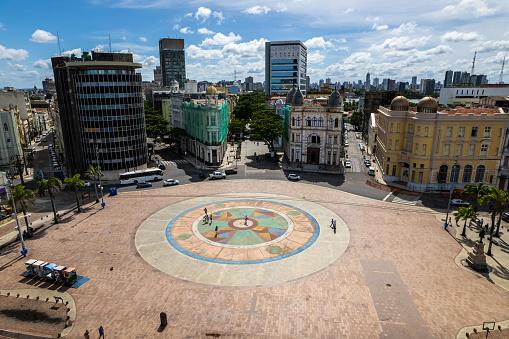
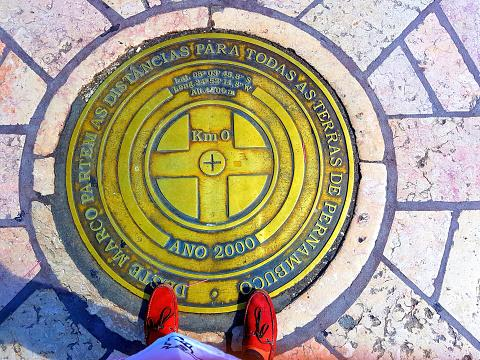
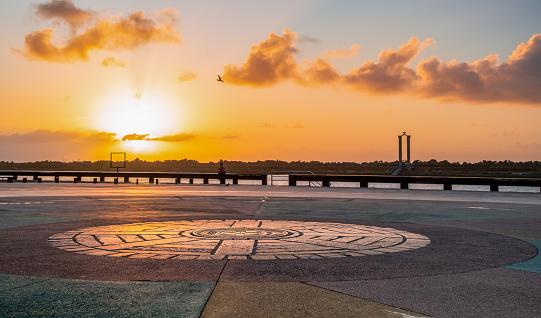

O Bairro do Recife, no centro da cidade, foi a trilha adotada para expandir o crescimento da área do Estado de Pernambuco, que se iniciou com a ocupação de povos europeus. Famoso por ser o bairro mais antigo da cidade, a expansão dele se deu de forma mais pronunciada a partir de 1630, no contexto da imigração holandesa, com avanços que foram mantidos mesmo após a retomada da posse das terras pelos portugueses. Na época, houve até mesmo períodos em que o antigo bairro chegou a apresentar elevada densidade populacional. A partir de 1910, o bairro passou por outro período marcante, fruto de obras que buscaram tanto modernizar o porto ali presente quanto erguer novas construções, fazendo que cerca de dois terços do bairro tivessem de ser demolidos para dar espaço a novas edificações.

A Praça do Marco Zero, também conhecida como Praça do Rio Branco, localizada no coração desse bairro, é onde podem ser vistos alguns reflexos de todos esses momentos, de modo que no entorno estão localizados monumentos históricos importantes. Após ter permanecido submerso até meados do século 18, por ser a rota de entrada pelo mar, o Marco Zero de Recife foi oficialmente inaugurado em 31 de janeiro de 1938. Nos anos 1990, o entorno também passou por reformas que buscaram revitalizar a área portuária, o que implicou a retirada de parte da cobertura vegetal que ali existia. Com isso, os antigos casarões deram lugar a novos estabelecimentos e avenidas.

A mudança do piso também ocorreu, e hoje o Marco Zero está localizado no interior de uma rosa dos ventos gigante, com 10 metros de raio, obra de Cícero Dias, transformando o local em um símbolo do ponto inicial das estradas do Estado de Pernambuco e conferindo um novo valor à região. Ao redor estão dispostos edifícios de grande valor histórico, como a Bolsa de Valores e a Associação Comercial do Recife, o que valoriza o bairro e a torna a praça especialmente convidativa para turistas e moradores. Com o tempo, o Marco Zero de Recife não ficou consagrado apenas como um cartão de visita, mas também como um ponto de encontro da população, que tem ali a realização de diversos espetáculos, como o Ano-Novo, garantindo aos visitantes um show de luzes e apresentações, indo além da função simbólica.

No Carnaval de 2023, o Marco Zero também foi o ponto escolhido para ser palco de diversos shows, levantando a temática #VolteiRecife após anos de restrições em virtude da pandemia de covid-19. Logo ao lado, atualmente, fica o Centro de Artesanato de Pernambuco, que conta com mais de 20 mil itens à venda, sendo um importante local para difusão da cultura e de incentivo ao trabalho de mais de 1,8 artesãos, estabelecendo, assim, uma forte relação com o próprio desenvolvimento da população.